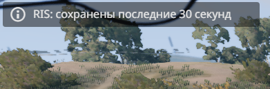
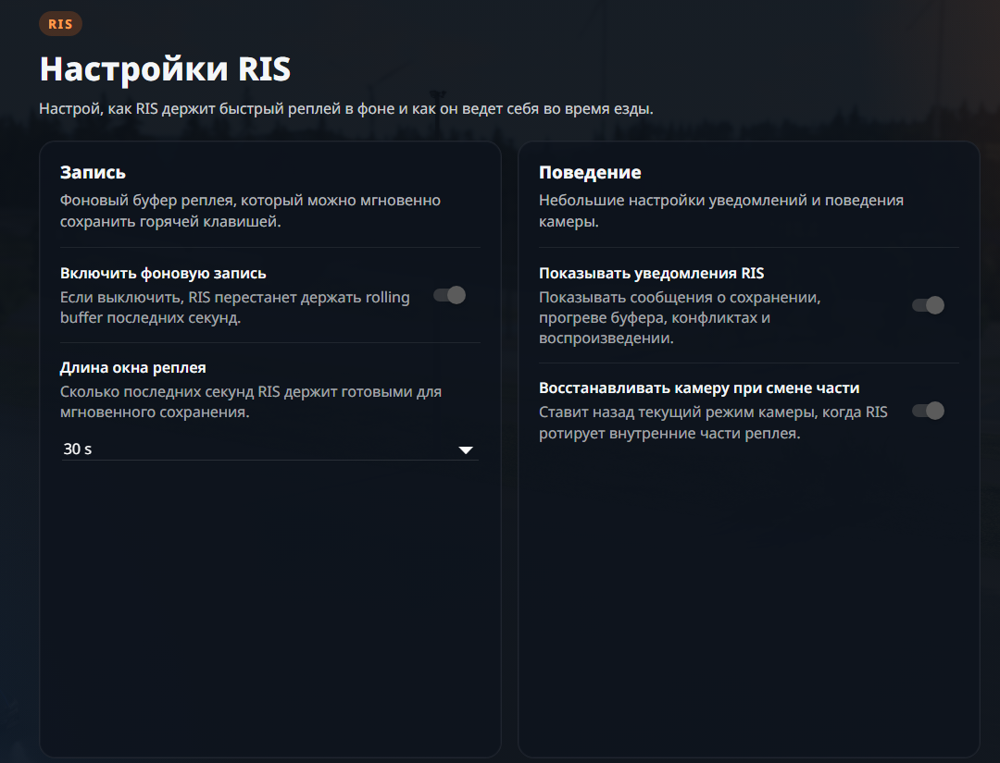
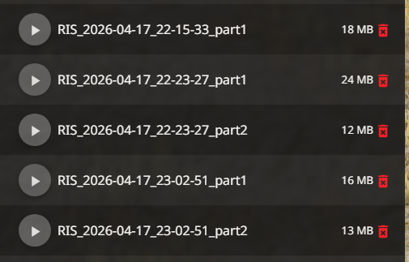

Rolling Buffer в фоне
Пока ты едешь, RIS непрерывно держит свежий буфер повтора. Не нужно заранее думать, когда нажать запись.
BeamNG.drive mod
RIS Replay Instant System записывает фоновый rolling buffer, чтобы ты мог одним нажатием сохранить недавний момент без ручного старта и остановки повтора. В настройках можно выбрать окно 15 / 30 / 45 / 60 секунд, включить уведомления и управлять поведением камеры при воспроизведении.
replays


Суть мода
Ядро мода держит текущую и предыдущую часть буфера, поэтому нужный момент можно сохранить уже после того, как он произошёл. Если встроенный replay BeamNG занят записью или воспроизведением, RIS аккуратно ставит свой буфер на паузу, чтобы не мешать штатной системе.
Пока ты едешь, RIS непрерывно держит свежий буфер повтора. Не нужно заранее думать, когда нажать запись.
Назначь действие RIS: Save Instant Replay в разделе Replay и сохраняй недавний момент ровно тогда, когда он уже произошёл.
В настройках RIS можно выбрать длину буфера, чтобы сохранить короткий клип с дрифтом или более длинный отрезок с аварией и погоней.
Мод показывает статус сохранения, прогрева буфера и конфликтов, а также умеет восстанавливать камеру при смене внутренних частей реплея.
Сохранённые повторы складываются в папку replays, а в самом RIS предусмотрено быстрое воспроизведение последнего сохранённого захвата.
Как пользоваться
После установки мод добавляет отдельную страницу RIS Settings, где включается фоновая запись и выбирается длина окна реплея.
В Controls → Replay найди действие RIS: Save Instant Replay. При желании там же можно привязать и RIS: Play Latest Capture для запуска последнего сохранённого захвата.
RIS начинает заполнять буфер сразу после старта сессии. В первые секунды сохранение может быть короче выбранного окна, пока буфер не заполнится полностью.
Когда случился нужный эпизод, просто жми хоткей. RIS сохранит свежий захват в replays, и ты сможешь быстро открыть или воспроизвести его позже.
Установка
Папка для установки мода
C:\Users\(ваш пользователь)\AppData\Local\BeamNG\BeamNG.drive\current\mods
Куда RIS складывает сохранённые реплеи
C:\Users\(ваш пользователь)\AppData\Local\BeamNG\BeamNG.drive\current\replays
Если не хочешь искать путь вручную, в Launcher BeamNG.drive можно открыть пользовательскую папку через Manage User Folder → Open in Explorer.
Ещё один мод
Если кроме instant replay тебе нужен быстрый доступ к дополнительным возможностям прямо в игре, посмотри и этот мод.
Перейти на сайт Cheat MenuГотово к установке